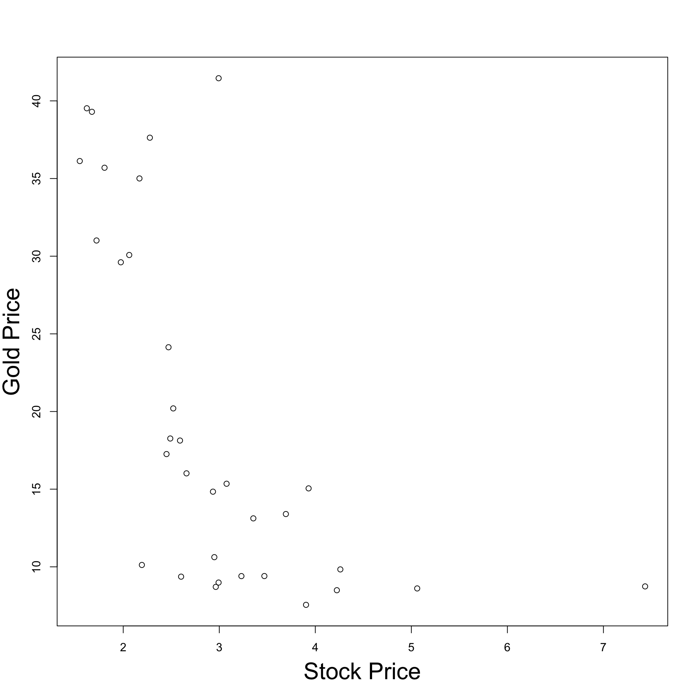
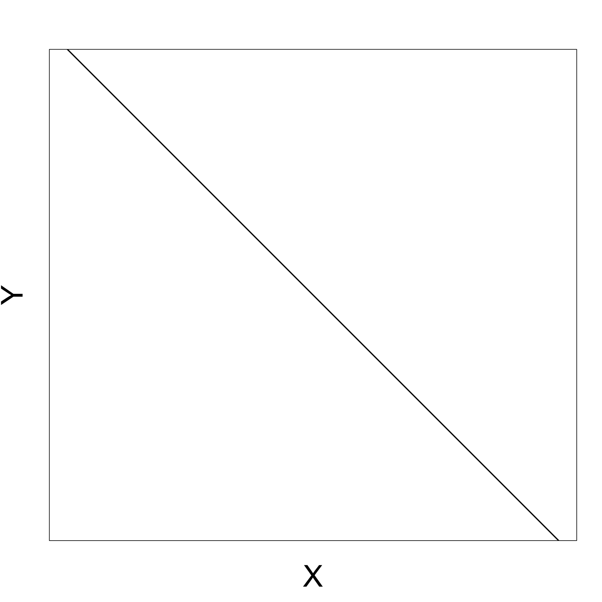

Statistical Models
Lecture 1
Lecture 1:
An introduction to Statistics
Outline of Lecture 1
- Module info
- Motivation
- Probability background
- Statistics background
Part 1:
Module info
Contact details
- Lecturer: Dr. Silvio Fanzon
- Call me:
- Silvio
- Dr. Fanzon
- Email: S.Fanzon@hull.ac.uk
- Office: Room 104a, Larkin Building
- Office hours: Wednesday 12:00-13:00
- Meetings: in my office or send me an Email
References
Main textbooks
Slides are self-contained and based on the book
- [1] Bingham, N. H. and Fry, J. M.
Regression: Linear models in statistics.
Springer, 2010
References
Main textbooks
.. and also on the book
- [2] Fry, J. M. and Burke, M.
Quantitative methods in finance using R.
Open University Press, 2022
References
Secondary References
Probability & Statistics manual
Easier Probability & Statistics manual
R manual
The nature of Statistics
Statistics is a mathematical subject
Maths skills will give you a head start
There are other occasions where common sense and detective skills can be more important
Provides an early example of mathematics working in concert with the available computation
The nature of Statistics
We will use a combination of hand calculation and software
- Recognises that you are maths students
- Software (R) is really useful, particularly for dissertations
- Please bring your laptop into class
- Download R onto your laptop
Overview of the module
Module has 11 Lectures, divided into two parts:
Part I - Mathematical statistics
Part II - Applied statistics
Overview of the module
Part I - Mathematical statistics
- Introduction to statistics
- Normal distribution family and one-sample hypothesis tests
- Two-sample hypothesis tests
- The chi-squared test
- Non-parametric statistics
- The maths of regression
Overview of the module
Part II - Applied statistics
- An introduction to practical regression
- The extra sum of squares principle and regression modelling assumptions
- Violations of regression assumptions – Autocorrelation
- Violation of regression assumptions – Multicollinearity
- Dummy variable regression models
Part 2:
Motivation
Simple but useful questions
Generic data:
- What is a typical observation
- What is the mean?
- How spread out is the data?
- What is the variance?
Regression:
- What happens to Y as X increases?
- increases?
- decreases?
- nothing?
Statistics answers these questions systematically
- important for large datasets
- The same mathematical machinery (normal family of distributions) can be applied to both questions
Analysing a general dataset
Two basic questions:
- Location or mean
- Spread or variance
Statistics enables to answer systematically:
- One sample and two-sample t-test
- Chi-squared test and F-test
Recall the following sketch
Curve represents data distribution
Motivating regression
Basic question in regression:
What happens to Y as X increases?
- increases?
- decreases?
- nothing?
In this way regression can be seen as a more advanced version of high-school maths
Positive gradient
As X increases Y increases

Negative gradient
As X increases Y decreases
Zero gradient
Changes in X do not affect Y

Real data example
- Real data is more imperfect
- But the same basic idea applies
- Example:
- X = Stock price
- Y = Gold price
Real data example
How does real data look like?
Dataset with 33 entries for Stock and Gold price pairs
|
|
|
Real data example
Visualizing the data
Plot Stock Price against Gold Price
Observation:
- As Stock price decreases, Gold price increases
Why? This might be because:
- Stock price decreases
- People invest in secure assets (Gold)
- Gold demand increases
- Gold price increases
Don’t panic
- Regression problems can look a lot harder than they really are
- Basic question remains the same: what happens to Y as X increases?
- Beware of jargon. Various authors distinguish between
- Two variable regression model
- Multiple regression model
- Analysis of Variance
- Analysis of Covariance
- Despite these apparent differences:
- Mathematical methodology stays (essentially) the same
- regression-fitting commands in R stay (essentially) the same
Part 3:
Probability background
Sample space
Definition: Sample space
A set \Omega of all possible outcomes of some experiment
Examples:
Coin toss: results in Heads = H and Tails = T \Omega = \{ H, T \}
Student grade for Statistical Models: a number between 0 and 100 \Omega = \{ x \in \mathbb{R} \, \colon \, 0 \leq x \leq 100 \} = [0,100]
Events
Definition: Event
A subset E of the sample space \Omega (including \emptyset and \Omega itself)
Operations with events:
Union of two events A and B A \cup B := \{ x \in \Omega \colon x \in A \, \text{ or } \, x \in B \}
Intersection of two events A and B A \cap B := \{ x \in \Omega \colon x \in A \, \text{ and } \, x \in B \}
Complement of an event A A^c := \{ x \in \Omega \colon x \notin A \}
Events
More Operations with events:
- Infinite Union of a family of events A_i with i \in I
\bigcup_{i \in I} A_i := \{ x \in \Omega \colon x \in A_i \, \text{ for some } \, i \in I \}
- Infinite Intersection of a family of events A_i with i \in I
\bigcap_{i \in I} A_i := \{ x \in \Omega \colon x \in A_i \, \text{ for all } \, i \in I \}
Events
Example: Consider sample space and events \Omega := (0,1] \,, \quad A_i = \left[\frac{1}{i} , 1 \right] \,, \quad i \in \mathbb{N} Then \bigcup_{i \in I} A_i = (0,1] \,, \quad \bigcap_{i \in I} A_i = \{ 1 \}
Events
Definition: Disjoint
Two events A and B are disjoint if
A \cap B = \emptyset
Events A_1, A_2, \ldots are pairwise disjoint if
A_i \cap A_j = \emptyset \,, \quad \forall \, i \neq j
Definition: Partition
The collection of events A_1, A_2, \ldots is a partition of \Omega if
- A_1, A_2, \ldots are pairwise disjoint
- \Omega = \cup_{i=1}^\infty A_i
Probability
To each event E \subset \Omega we would like to associate a number P(E) \in [0,1]
The number P(E) is called the probability of E
The number P(E) models the frequency of occurrence of E:
- P(E) small means E has low chance of occurring
- P(E) large means E has high chance of occurring
Technical issue:
- One cannot associate a number P(E) for all events in \Omega
- Probability function P only defined for a smaller family of events
- Such family of events is called \sigma-algebra
Probability
Definition: sigma-algebra
Let \mathcal{B} be a collection of events. We say that \mathcal{B} is a \sigma-algebra if
- \emptyset \in \mathcal{B}
- If A \in \mathcal{B} then A^c \in \mathcal{B}
- If A_1,A_2 , \ldots \in \mathcal{B} then \cup_{i=1}^\infty A_i \in \mathcal{B}
Example: If \Omega is any set, then \mathcal{B} = \{ \emptyset, \Omega \} is a \sigma-algebra
Probability
Example: If \Omega is finite or countable then the power set of \Omega \mathcal{B} = \operatorname{Power} (\Omega) = \{ A \colon A \subset \Omega \} is a \sigma-algebra
Examples of Continuous RV
The Normal distribution with mean \mu and variance \sigma^2 is denoted by N(\mu,\sigma^2)
The pdf of N(\mu,\sigma^2) is f(x)=\frac{1}{\sqrt{2\pi\sigma^2}} \, \exp\left\{-\frac{(x-\mu)^2}{2\sigma^2}\right\}
N(0,1) is the standard normal distribution
Examples of Continuous RV
Theorem
If X \sim N(\mu,\sigma^2) then Z \sim N(0,1) where
Z := \frac{X-\mu}{\sigma}
Check
Proof
Check
Part 4:
Statistics background
Thank you!
References
[1]
Bingham, Nicholas H., Fry, John M., Regression, linear models in statistics, Springer, 2010.
[2]
Fry, John M., Burke, Matt, Quantitative methods in finance using R, Open University Press, 2022.
[3]
Casella, George, Berger, Roger L., Statistical inference, second edition, Brooks/Cole, 2002.
[4]
DeGroot, Morris H., Schervish, Mark J., Probability and statistics, Fourth Edition, Addison-Wesley, 2012.
[5]
Dalgaard, Peter, Introductory statistics with R, Second Edition, Springer, 2008.